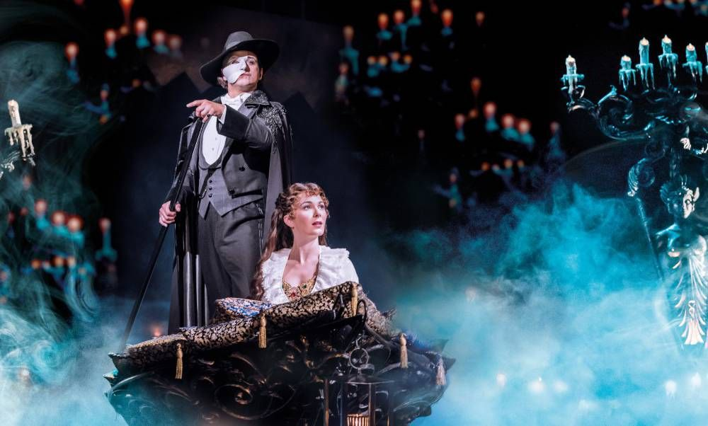

Hola! Nice to meet you. My name is Maria, but my nickname is Phantom!
·
I adopted this nick because I absolutely love the Phantom of The Opera! It is my favorite musical ever, I got lucky to see it live here in NYC at the Majestic Theatre before it left :(. If you are into Theather/Musicals it is a must see (there is a movie as well). The Soundtrack is such a masterpiece. Other favorite musicals of mine are "The Greatest Showman," "La La Land", "Tick,Tick... Boom!," and "Hamilton"!
·
Besides that, I am into anime, mobile games, 3D stuff (Blender), classical music, opera, poetry, drawing, and art in general!
·
I also like to travel and explore new places! I dropped more pictures in the "More" section, so feel free to check it out :). Though if you would like to see my professional website, you can click on the ♥ again!
·
